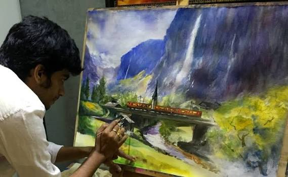

Attention to detail is one of the greatest strengths of Vilas Nayak. Every strand of hair, facial expression, clothing texture, and shadow is carefully refined to make the artwork realistic. His dedication to fine detailing makes every sketch unique and visually impressive.
⬅ Previous Next ➜